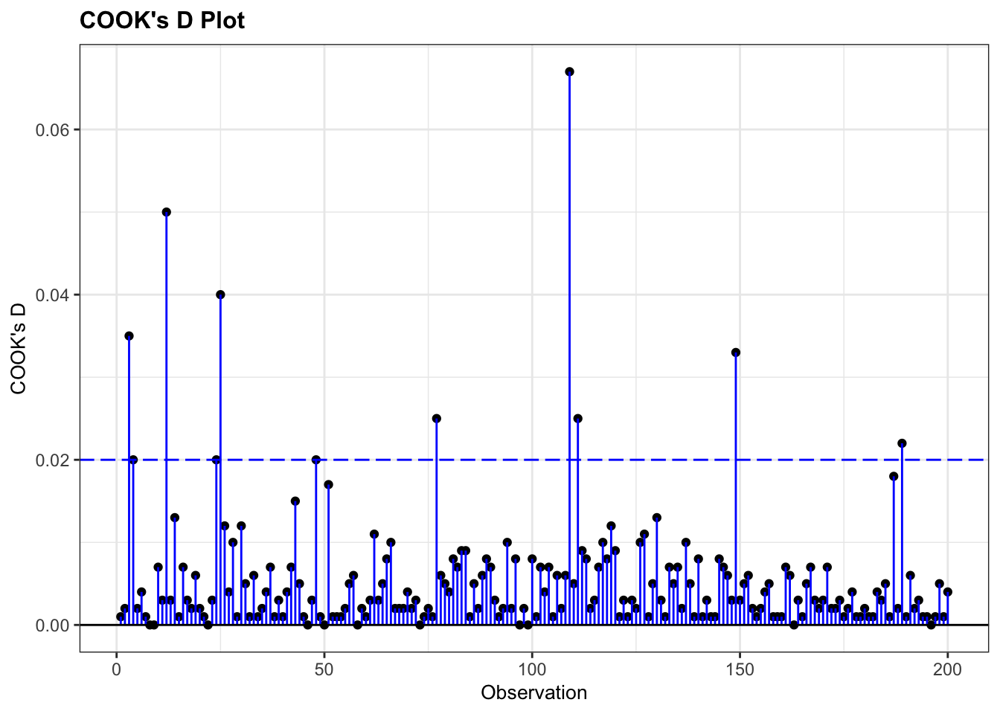

Chapter 18 Necesito cambiar este gráfico, ya que viene del web (del siguiente website “https://towardsdatascience.com”).
18.1 Cuando la variable dependiente no es lineal
El problema principal por mucho tiempo ha sido que la variable dependiente no tiene distribución normal y por consecuencia no cumplía con los supuestos de la regresión lineal. El método de linearizar la variable de respuesta fue desarrollado por Nelder y Wedderburn 1972. Puede encontrar información sobre la prueba y su evolución de GLM en https://encyclopediaofmath.org/wiki/Generalized_linear_models. Con el avance del uso de las computadoras en los años 80 terminó en ser uno de los métodos estadísticos más utilizados.
El termino GLM se refiere a un gran variedad de modelos de regresión. El supuesto en estos modelos es que la variable de respuesta \(y_i\) sigue una distribución dentro de la familia de distribuciones exponencial con un promedio \(\mu_i\), donde se asume una función \(\mu_i^T\beta\) que frecuentemente no es lineal. Para linearizar la variable es necesario usar un “link” para convertir la variable dependiente, \(y_i\).
18.2 Link disponible
Aquí enseño una lista parcial de los diferentes tipos de “links” para diferentes tipos de datos (o distribuciones) de la variable independiente, \(y_i\). La decisión de cual transformación o link utilizar es necesaria dependerá de los tipos de datos y sus distribución.
| Modelo | Variable_Dep | Link | Variables_Independiente |
|---|---|---|---|
| Regresión Lineal | Normal | Identidad | Contínua |
| ANOVA | Normal | Identidad | Categórico |
| Regresión logistica | Binomial | Logit | Mixto |
| Regresión Poisson | Poisson | Log | Mixto |
Aunque las distribuciones anteriores son bien comunes no son los únicos links disponibles para transformar los datos. Aquí hay información suplementaria sobre algunos otros links que están disponible R en ciertos paquetes.
| Familia | Links |
|---|---|
| Gaussian/Normal | identidad, log, inversa |
| Binomial | logit, probit, cauchit, log, cloglog |
| Gamma | inversa, identidad, log |
| Poisson | log, identidad, raiz cuadrada |
| Gausian inversa | 1/µ^2, inversa, identidad, log |
18.3 Los supuestos
- La ventaja es que ahora la variable dependiente no tiene que tener una distribución normal.
- Además los datos sin transformar no tienen que tener una relación lineal. Sin embargo los datos tienen que provenir de una distribución de la familia exponencial, por ejemplo, binomial, Poisson, multinomial, normal, normal inversa, etc.
- GLM no asume una relación lineal entre la variable dependiente y independiente, pero asume una relación lineal de los datos de la variable dependiente transformado y la variable independiente. Por consecuencia se asume una relación lineal entre la variable binaria y la variable explicativa despúes de usar la transformación con el link, \(logit\left(\pi\right)=\beta_0+\beta_1\cdot x_i\).
- No se tiene que tomar en cuenta el supuesto de igualdad de varianza (homogeneity of variance)
- Los errores tienen que ser independientes pero no importa si cumple con una la distribución normal.
18.4 Las ventajas de GLM
- Los parámetros se estiman usando la verosimilitud (MLE = Maximum Likelihood estimators), no con los mínimos cuadrados (OLS =ordinary least square). Los modelos se estiman vía la verosimilitud, entonces optimizan los estimadores, \(\beta\).
- No hay que transformar los datos de la variable dependiente para normalizarlos.
- La selección del “link” es independiente de la variable(s) dependiente(s), que hace más fácil crear modelos.
- Las herramientas para evaluar las inferencias y los modelos están disponible tal como evaluar los residuales, los intervalos de confianza, desviación, likelihood ratio test entre otros.
18.5 Modelos binomial o Bernoulli
Si la variable es binomial, hay solamente dos alternativas, 0 y 1, o si o no, muerto o vivo, se usa la distribución binomial. Se utiliza la función logit como función de enlace y la distribución binomial/Bernoulli como distribución de probabilidad, el modelo se denomina Regresión logística.
\[\log\frac{q_i}{1-q_i}=\beta_0+\beta_1X_i\]
donde la distribución es una binomial con \(y_i\sim Binomial\left(q_i\right)\).
#library(wakefield)
x=r_sample_binary(50, x = 0:1, prob =c(0.3, 0.7), name = "Binary")
#x
df=as.data.frame(as.factor(x))
#df
ggplot(df, aes(x))+
geom_histogram(fill="blue")+
scale_x_continuous(breaks = c(0, 1))+
xlab("Binary Values")
18.5.1 Distribución Gamma
La distribución gamma se utiliza frecuentemente para tomar en cuenta variables que tienen colas muy largas y grandes (Heavy-Tailed distributions). La distribución se usa mucho en el área de econometría y estimados de supervivencia.
La distribución gamma puede ser parametizado con un termino de “shape \(\alpha = k\) y el inverso de un parámetro de escala (scale) \(\beta=1/\theta\) que se conoce como un parametro de rate.
\[f\left(x\right)=\frac{\left(\beta^{\alpha}\cdot x^{\alpha-1}e^{-\beta x}\right)}{\Gamma\left(\alpha\right)}\ para\ x>0,\ \ \alpha,\ \beta>0\]
donde \(\Gamma\left(\alpha\right)\) is la función gamma. Para cada valor entero \(\Gamma\left(\alpha\right)=\left(\alpha-1\right)!\)
En otra palabra la distribución gamma es para modelar variables continuas que siempre son positivas y tienen distribuciones sesgadas
Ejemplos donde se usa la distribución gamma
- el tiempo hasta el momento de fracaso de un equipo
- el tiempo hasta el momento la muerte de individuos
- la cantidad de agua acumulada en un lago
- el tamaño de los préstamos impagos
Veamos algunas distribuciones gamma
#dgamma(x,shape=k, scale=theta)
x = 0:20
curve(dgamma(x, shape=1, scale=2), xlab = "x", ylab = "f(x;k,theta)", 0.4, 20, col = 3, lwd = 3,
main = "Gráfico distribución Gamma")
curve(dgamma(x, shape=2, scale=2), xlab = "x", ylab = "f(x;k,theta)", 0.4, 20, col = 5, lwd = 3,
add = TRUE)
curve(dgamma(x, shape=2, scale=4), xlab = "x", ylab = "f(x;k,theta)", 0.4, 20, col = 6, lwd = 3,
add = TRUE)
curve(dgamma(x,shape =5, scale=1), xlab = "x", ylab = "f(x;k,theta)", 0.4, 20, col = 7, lwd = 3,
add = TRUE)
curve(dgamma(x, shape=9, scale=0.5), xlab = "x", ylab = "f(x;k,theta)", 0.4, 20, col = 1, lwd = 3,
add = TRUE)
curve(dgamma(x, shape=7.5, scale=1), xlab = "x", ylab = "f(x;k,theta)", 0.4, 20, col = 2, lwd = 3,
add = TRUE)
legend("topright", c("k=1,theta=2", "k=2,theta=2", "k=2,theta=4","k=5,theta=1","k=9,theta=0.5", "k=7.5,theta=1.0"), col = c(3, 5,6, 7,1,2), lwd = 3, inset = 0.05)